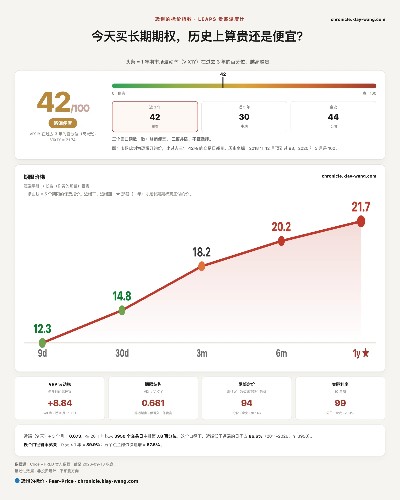
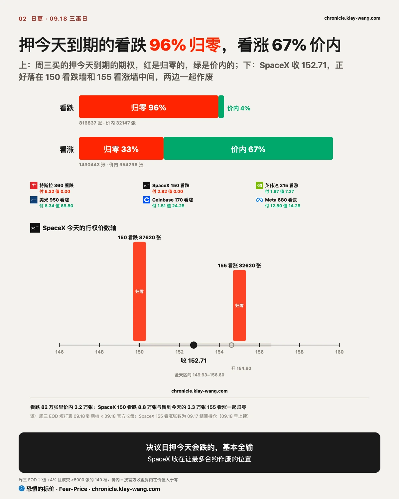
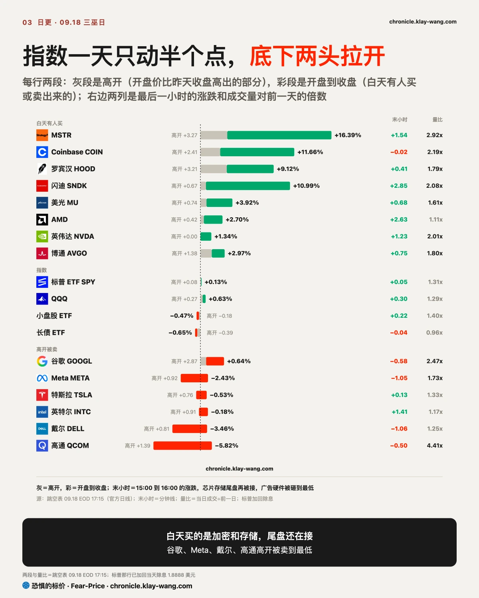
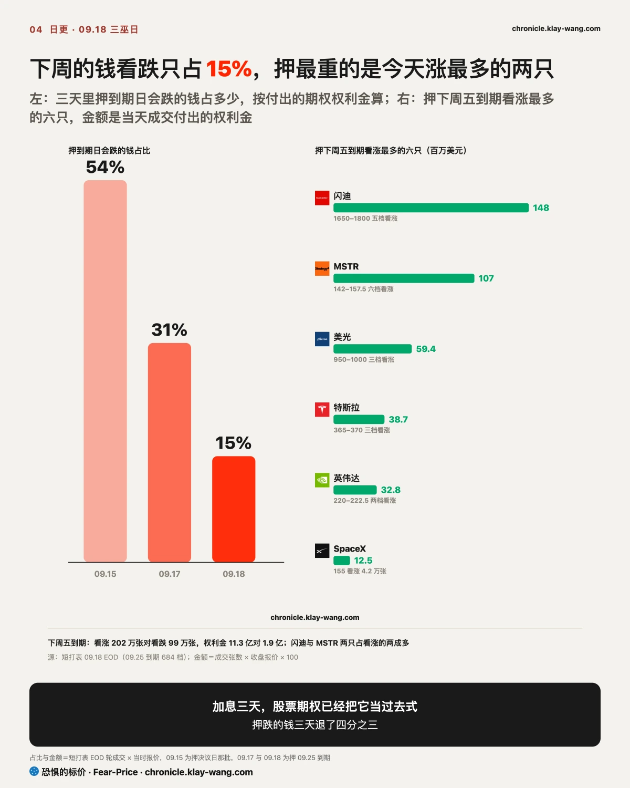
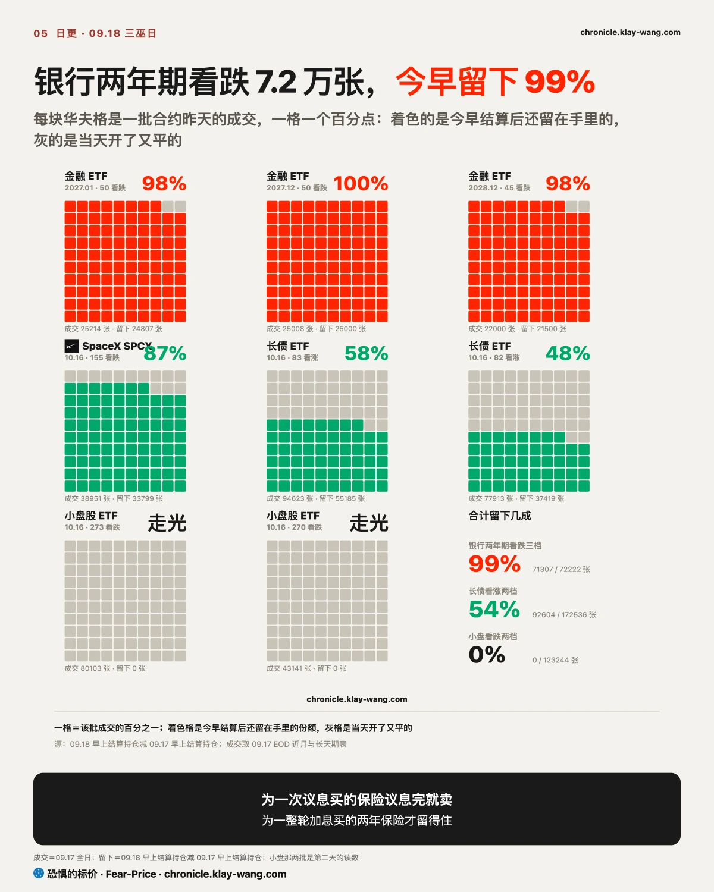

恐惧的标价指数（Fear-Price Index）· 2026-09-18 · 读数 41.8/100：一年期波动率 VIX1Y 为 21.74，处于近三年第 41.8 百分位，高即贵。逐日台账与口径 → chronicle.klay-wang.com · 转载注明：恐惧的标价指数 · Fear-Price
一年期保险这一周走了个来回：上周五 42.3，议息那天 49.3，今天 41.8。为那场会买的保护，会开完就退回原点，一个月的保险还在便宜，VIX 14.81，CNN 恐贪 29.1，两个相除的 K 指数 1.97，要跌破 1 得 VIX 涨过 29，历史在 chronicle.klay-wang.com/kindex。该记住的只有一件事：股票的保险在退，利率的保险今天涨回去了，为利率买保护的价钱从 76.22 回到 80.64，和两年期收益率涨 8 个基点是一件事。

周三是议息那天，当天有人买了押今天到期的期权，看跌 82 万张，看涨 143 万张。今天收盘，看跌 96% 归零，看涨三分之二价内。周三押今天会跌的人，基本全输。
SpaceX 是今天最典型的一档。昨天写市场赌它开盘跳过 155，今天开在 155 下方，上午掉到 151，收 152.71：留到今天的 155 看涨归零，周三买的 150 看跌也归零，两边都输。收盘价落在让最多合约作废的位置，季度到期日常常如此，两边下注的人一起交钱，做市商收。

外面都在说 2 万亿美元的期权今天到期会带来下行波动，标普全天只在 758 到 762 这个区间里走，收 761.69，昨天写的 750 到 768 之间来回成立。等权重标普和小盘都跌了近半个点，指数平着，是权重股撑的。
底下分家，尾盘看得最清楚。芯片和存储涨了一天，从开盘到收盘一路有人买，尾盘全在拉涨，闪迪、AMD、迈威尔、ARM、英伟达都收在全天区间的最高一成；半导体 ETF 最后一小时的成交占了全天四成，英伟达全天成交是昨天的两倍。同一小时被砸的是 APP、戴尔、Meta、谷歌、高通，收在全天最低一成附近。指数最后一小时几乎没动，尾盘的钱全在个股，说明三巫日的钱只挑当天能兑现的东西。周一结算，押存储和加密下周涨的看涨要是留不下一半，白天买出来的涨也只是过路钱，这句收回。

闪迪今天涨了一成一，高开不到一个点，其余全是白天买出来的，最后一小时再涨近三个点收在全天最高，量两倍。期权里押它下周涨的看涨约 1.5 亿美元，我们盯的票里最重的一笔；同一天它一年期的保险在涨价，买的人自己在配保护。市净率 16.7 倍，近一年只有一成半的时间比现在便宜，离 200 日线 68%，20 天高点 1807 就在头顶。今天涨的是两件事，140 亿美元回购，加上花旗说 DRAM 短缺持续到 2031 年，市场先按最好的情况算。这个位置如果是我，要么等它站稳 1807，要么等周一结算看那 1.5 亿看涨留不留一半，留下才是有人接，留不下就是三巫日的过路钱。
加密三只是同一个形状。MSTR 涨了一成六，开盘到收盘一路被买，收在全天最高，量是平时近三倍。比特币重上 8 万，一小时爆了 1.7 亿美元空头。期权里 MSTR 押下周的看涨约 1.1 亿美元，同一天它也在买腰斩保护；三只一个月保险同时贵了三四个点，42 只里最高。空头回补推上去的涨，保险会便宜；追着买还顺手买保护，保险才会跟着涨，今天是后者，给 Coinbase 买一个月保险一天贵了约 15%。MSTR 离 50 日线 39%，市净率 1.7 倍，比近一年九成的时间贵，对它手里的比特币溢价七成；Coinbase 正好压在 200 日线上方。周一结算 MSTR 那批看涨剩多少，剩一半以上再谈追。

反方向是银行。昨天写金融 ETF 有人买了 2027 到 2028 年三档看跌，像一个买家在铺梯子，今天早上结算持仓出来，也就是第二天早上还留在手里的合约，7.2 万张留下 99%。同一天留下来的：长债的十月看涨留一半多，SpaceX 一个月看跌留近九成，小盘的十月看跌一张没多。为一次议息买的保险议息完就卖，为一整轮加息买的两年保险才留得住。高盛今天跌破 200 日线 949，一周跌 8.5%，五家全跌，除摩根大通外尾盘都收在区间下方；一年期保险一周贵了 4.5 点，全表升幅最大，一个月的昨天退光，今天花旗、摩根大通又涨了一点。13.7 倍市盈率比近三年九成的时间便宜，便宜、破位、保险在涨，三样同时出现，市场按一个周期给银行定价，不是一次会议。今天有个反向的信号，金融 ETF 年底到期的看涨成交 3.6 万张，两年的保护和三个月的看涨同时在。这个位置如果是我，要么等一年期保险不再涨价，要么等 10 月再加息的定价从六成往下走，两个都没到之前，便宜只是便宜。
长债是银行的另一半。两年期收益率今天涨 8 个基点到 4.74%，一周涨 12 个，离 2024 年 4 月的高点只差一步；掉期给 10 月再加息定价六成，到年底再加一次多。为利率买保护的价钱昨天离 76 只差 0.22，今天涨回 80.64。长债 ETF 收 81.25，一年最低就在下面一个点；期权里三天加了十几万张看涨之后，今天看跌来了，十月两档各 3.5 万张，但两档原有持仓都比这大得多，可能是平旧仓，周一结算才知道。期货那层也没跟着现货便宜：VIX 现货 14.81，10 月期货 18 还涨了一点；持仓报告里对冲基金三周在减做空波动率的仓，资管在加。标普一个月保险 12.29 没回 14，昨天那句十月保险是为三巫买的，成立。

谷歌高开近三个点，白天吐掉大半，收在全天区间最低一成，量是平时两倍半。期权却是看涨对看跌七比一，10 月初的远虚值看涨有人新开。17.5 倍市盈率比五年 95% 的时间便宜。盘面在卖、期权在押涨、估值便宜，三层不同向的时候，周一开盘守不守 349 比哪一层都重要。Meta 高开低走收在最低一成，关联的数据中心发了第一只垃圾债，认购四倍，钱借到了，股票被卖。戴尔收在全天最低，看跌是看涨的六倍，市盈率比近三年九成的时间贵，昨天记的那批在 588 上方锁利润的看跌今天验证了。高通量四倍地跌，没人买跌，是获利了结。加密和存储是白天买出来的，这四只是高开被卖的，差别在谁的账上有当天能兑现的东西：闪迪有回购，MSTR 有比特币，Meta 有的是新借的债。
昨天立的四条，三条对，一条差 20 美分。
不给操作建议，只把价格换算成你能自己判断的数。
手里有存储和加密的：周一结算看押它们下周涨的看涨留几成，闪迪 1.5 亿美元、MSTR 12 万张，留一半以上才是有人接。追的人自己在买保护，跟着追的人也该配一份。
手里有银行的：高盛跌破 200 日线 949，两年期看跌 7 万张住着，13.7 倍是便宜，便宜的东西这周每天都在更便宜。看一年期保险哪天不涨。
手里有芯片的：英伟达的保险三年里几乎最便宜的一天，配保护的成本最低；AMD 和英特尔离 200 日线 58% 和 41%，等回踩。
手里是指数基金的：下周没有议息，只有 09.25 到期那批看涨，指数继续靠芯片和存储撑。